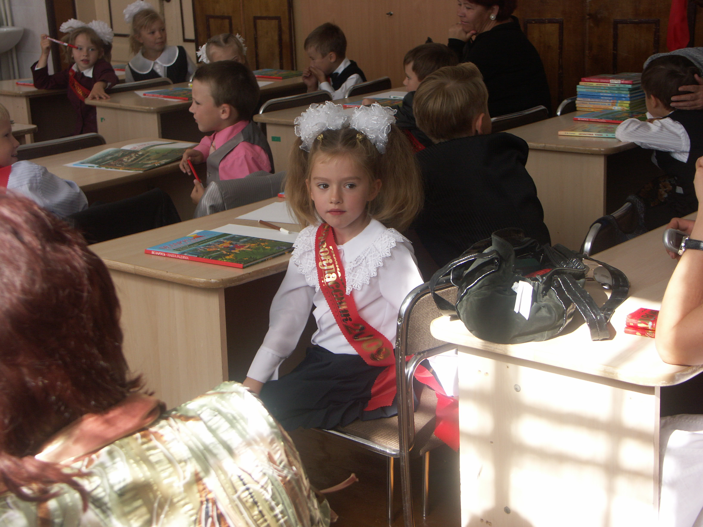

Школьная жизнь Кати была насыщенной и интересной. Тогда и до сих пор ей нравилось учиться чему-то новому, она неравнодушна к любым знаниям. Поэтому Кате всегда нравилось ездить в г. Солигорск на олимпиады по русскому языку, участвовать в командных играх по Что? Где? Когда? и прочих турнирах.

Кате всегда нравилось творчество и искусство, поэтому с самого раннего детства она хотела учиться в музыкальной школе. И в 2018 году закончила Несвижскую детскую школу искусств по фортепианному отделению. Там ей тоже приносило удовольствие участие в конкурсах, как сольно, так и в ансамбле цимбалистов.
Катя с уверенностью может сказать, что очень любит свой родной город. Так как там каждый кирпичик пронизан историей. Это Замок Радзивиллов с дворцово-парковым ансамблем, Слуцкие ворота, Фарный костел (16 век), на органе которого она играла, и др. Живя в Минске, Катя восполняет культурный пробел выступлениями на бесплатных концертах, занятиях в музыкальных классах на Немиге.
Академия даёт Кате бесценный опыт во всех сферах жизни. Вместе учимся, преодолеваем трудности, развиваемся, расширяем кругозор, практикуем навыки и становимся лучше. Так как смысл есть в самосовершенствовании (и в соблюдении моральных норм). В любых ситуациях человек должен оставаться человеком. Без морали в голове человек – не человек.

.png)

.png)

.png)